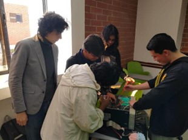

En este proyecto se realizó mantenimiento preventivo a un equipo de cómputo, incluyendo la limpieza interna y externa de sus componentes, revisión del estado del hardware y reemplazo de la pasta térmica del procesador. Se identificaron las partes principales de la motherboard y se aplicaron técnicas adecuadas para el manejo y cuidado de los componentes. Además, se documentó todo el proceso mediante un informe técnico, con el objetivo de mejorar el rendimiento del equipo y prolongar su vida útil.

